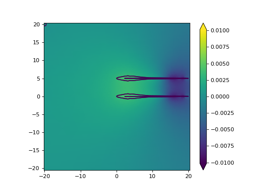
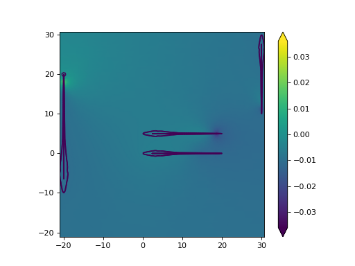

Multiple Fish¶
Despite being in the “advanced section” specifying multiple fish is trivial. All you need to do is to specify a list of x and y coordinates and fish2eod will handle all the mechanics of creating the fish
from fish2eod import BaseFishModel, plotting
"""
Specify two fish
One fish with spine (0,0) -> (20, 0)
One fish with spine (0,5) -> (20, 5)
"""
fish_x = [[0, 20], [0, 20]]
fish_y = [[0, 0], [5, 5]]
model = BaseFishModel()
model.compile(fish_x=fish_x, fish_y=fish_y)
model.solve(fish_x=fish_x, fish_y=fish_y)
plotting.mesh_plot_2d(model.solution, "solution")
plotting.plot_outline(model.solution)
(Source code, png, hires.png, pdf)
{kind=link}
{kind=link}

You’ll notice that all model code is identical to code you’ve seen before. The only exception is that fish_x and
fish_y parameters are lists of lists.
This is not limited to two fish or constant eod phase. In this example we’ll make 4 fish with 4 different eod phase
from fish2eod import BaseFishModel, plotting
"""
Specify two fish
One fish with spine (0,0) -> (20, 0)
One fish with spine (0,5) -> (20, 5)
One fish with spine (-20,-10) -> (-20, 20)
One fish with spine (30,30) -> (30, 10)
"""
fish_x = [[0, 20], [0, 20], [-20, -20], [30, 30]]
fish_y = [[0, 0], [5, 5], [-10, 20], [30, 10]]
phase = [0.2, 0.4, 0.8, 0.5]
model = BaseFishModel()
model.compile(fish_x=fish_x, fish_y=fish_y, eod_phase=phase)
model.solve(fish_x=fish_x, fish_y=fish_y, eod_phase=phase)
plotting.mesh_plot_2d(model.solution, "solution")
plotting.plot_outline(model.solution)
(Source code, png, hires.png, pdf)
{kind=link}
{kind=link}

Different EOD phases are specified in the same way: by specifying a list of phases to match each fish. (n.b. if a single EOD phase is specified then it is assumed to be shared across all fish.